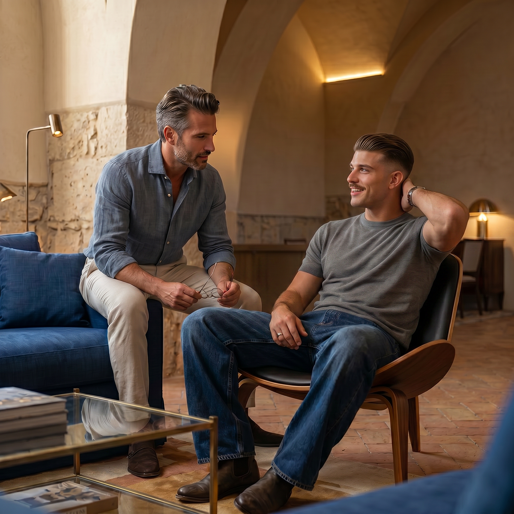
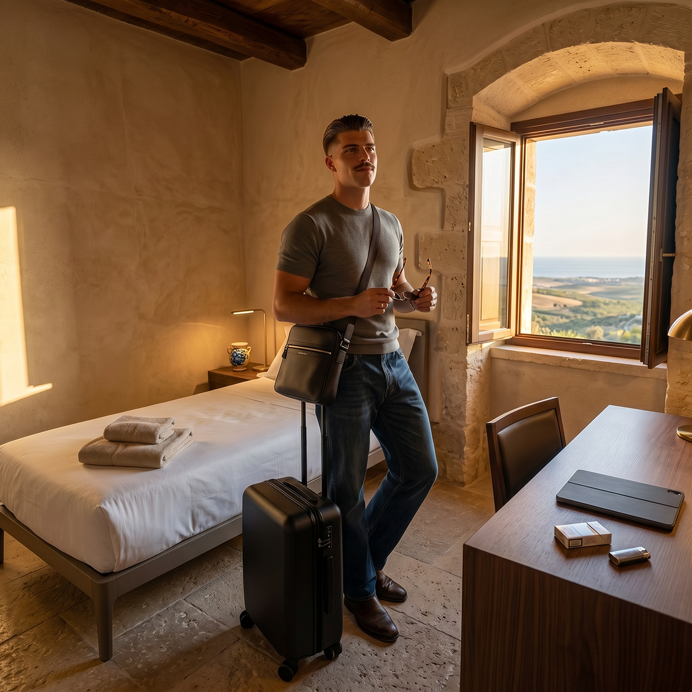
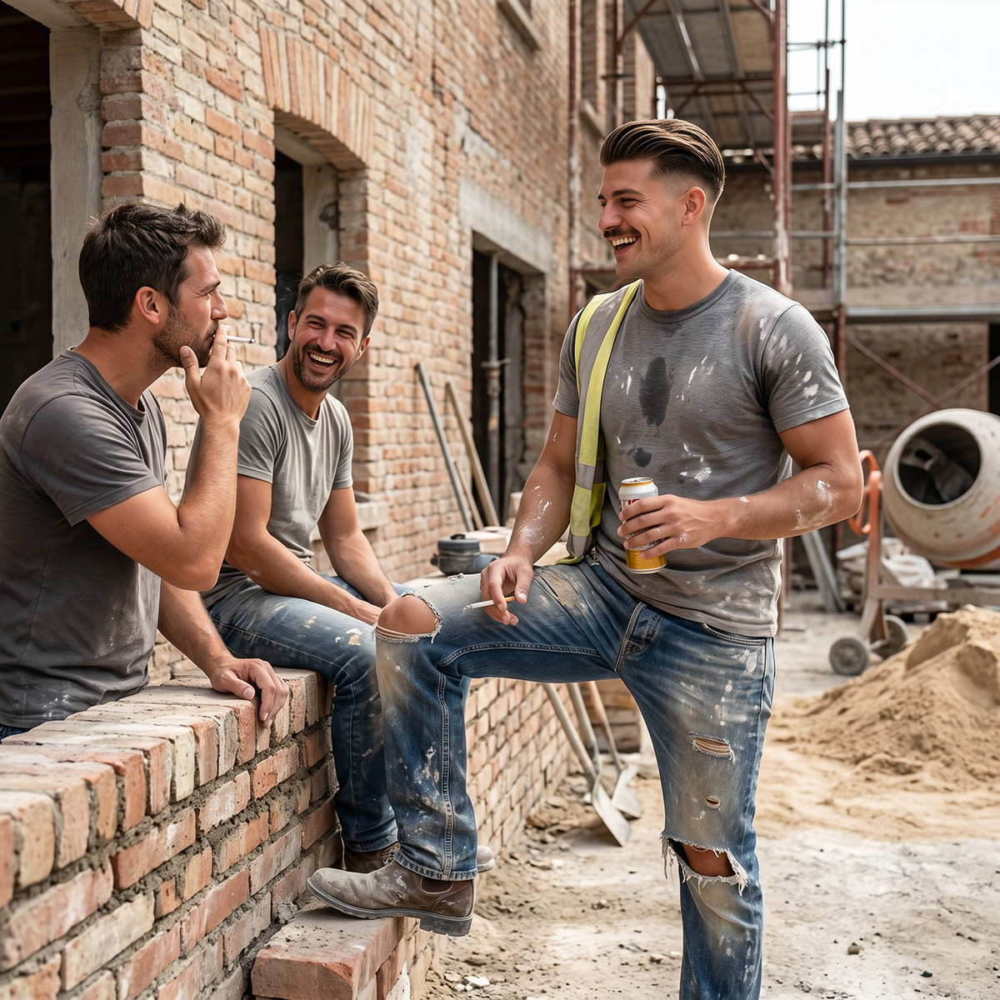

Entrare a far parte del Baglio San Michele non è un semplice acquisto immobiliare. È una scelta di vita che richiede tempo, conoscenza reciproca e allineamento profondo di valori.
Per questo motivo abbiamo strutturato un percorso di ingresso chiaro e graduale, pensato per permettere a entrambe le parti di valutare con serietà e rispetto la possibilità di camminare insieme.
Il processo è reciproco: non solo il Baglio valuta i candidati, ma anche chi desidera entrare ha modo di conoscere il luogo, le persone e lo stile di vita prima di prendere una decisione definitiva.
Due destinazioni, uno stesso percorso
Il percorso di ingresso è lo stesso per tutti. La destinazione abitativa, invece, dipende dalla stagione di vita:
- •Famiglie — abitano in appartamenti autonomi, con la propria intimità e, dove possibile, un piccolo orto.
- •Giovani single in formazione — abitano in cellette sobrie e condividono ampi spazi comuni (cucina, refettorio, lavanderia, sauna, palestra, sale studio).
Entrambe le sezioni fanno parte della stessa comunità, sotto la responsabilità del Capitolo dei Savi.
Nota sulla sezione single. La sezione single è attualmente riservata a giovani uomini. Le modalità di crescita e di formazione del carattere non sono le stesse per uomini e donne: un ambiente maschile di lavoro e di fraternità permette di formarsi in modo libero e sereno. Quando arriveranno richieste motivate da parte di ragazze, valuteremo l’apertura di una sezione femminile parallela.
Perché esiste un processo di selezione

Il Baglio non è un complesso residenziale aperto a chiunque abbia i mezzi economici. È una comunità intenzionale basata su valori condivisi: la tradizione cristiana, la famiglia stabile, il lavoro serio, il rifiuto della speculazione e della cultura dello scarto.
Un ingresso non selettivo distruggerebbe rapidamente ciò che stiamo costruendo. Per questo ogni candidatura viene esaminata con attenzione dal gruppo promotore e, in prospettiva, dal Capitolo dei Savi.
Le fasi del percorso di ingresso

Candidatura
Il percorso inizia con l'invio di una candidatura attraverso il modulo presente sul sito. Si richiede di compilare con attenzione il form, allegando una lettera motivazionale e, se possibile, un breve curriculum o descrizione delle proprie competenze e del proprio nucleo familiare.

Colloquio conoscitivo
I candidati selezionati vengono invitati a un colloquio (in presenza o online) con uno o più membri del gruppo promotore. Questo incontro serve a conoscersi reciprocamente, approfondire le motivazioni, chiarire dubbi e verificare l'allineamento con i principi del progetto.

Visita residenziale
Dopo il colloquio, i candidati vengono invitati a trascorrere alcuni giorni al Baglio. Questo momento è fondamentale per vivere direttamente l'atmosfera del luogo, conoscere gli altri residenti (quando presenti) e farsi un'idea concreta della vita comunitaria e del territorio. Si può approfondire anche tramite un periodo di soggiorno.

Periodo di prova e ingresso formale
In caso di reciproco interesse, si procede con un periodo di prova della durata variabile (generalmente alcuni mesi). Durante questa fase il nucleo familiare o il giovane single vive stabilmente al Baglio, partecipando alla vita comunitaria e contribuendo, secondo le proprie possibilità, alle attività del luogo. Al termine, se entrambe le parti confermano la volontà di proseguire, si sottoscrive l'accordo di ingresso formale.
I principi del nostro percorso
Reciprocità
Il Baglio valuta i candidati così come i candidati valutano il Baglio. Entrambe le parti devono sentirsi libere e motivate a camminare insieme.
Trasparenza
Cerchiamo di essere il più chiari possibile fin dall'inizio sui principi, le regole e le aspettative del progetto.
Gradualità
Il percorso è strutturato in fasi progressive proprio per permettere a tutti di maturare una decisione consapevole e serena.
Rispetto del tempo
Non ci sono scadenze forzate. Crediamo che una scelta così importante meriti il tempo necessario per essere ponderata.
Cosa cerchiamo in chi vuole entrare
- •Allineamento con i valori fondamentali del progetto (cristianesimo tradizionale, famiglia, lavoro, anti-speculazione)
- •Disponibilità a vivere in una comunità intenzionale, con i suoi ritmi e le sue regole
- •Capacità di contribuire in modo concreto (lavoro, competenze, presenza)
- •Stabilità familiare e personale
- •Rispetto della dimensione spirituale del luogo, anche per chi non è praticante
Per un approfondimento su chi stiamo cercando in questa fase: Chi cerchiamo →
Nota per chi desidera investire senza risiedere
È possibile sostenere il progetto anche senza entrare a far parte della comunità residenziale, attraverso la formula dell'investimento etico. In questo caso il percorso è diverso e più snello. Per maggiori informazioni consulta la pagina Investimento etico.
Sei interessato a intraprendere questo percorso?
Se senti che il Baglio San Michele potrebbe essere il luogo giusto per te e la tua famiglia (o per un periodo di formazione), ti invitiamo a iniziare il percorso inviando la tua candidatura.